01//
Mæus
A collaborative learning experience platform for corporate training and welfare, designed for Albini & Pitigliani. My master’s thesis.

the brief
The project grew out of my internship at Albini & Pitigliani, an international logistics company founded in Prato in 1945 and present in more than 80 countries. While there, I saw how hard it was to keep training going.
The challenge was twofold: lighten the load on the HR team, who handled training by hand, and improve the learning experience for every employee, including those in operational roles that are less visible.
questions
- How can HR processes be optimised to reduce paperwork?
- How can training be accessible to every employee, whatever their role?
- Which mechanisms can encourage collaboration and a sense of community?
- How can employees take a more active part in training and company life?
method
The platform, a software as a service, was designed through design thinking: an iterative, user-centred process from exploratory research and empathy with users to defining the design parameters, ideation and prototyping.
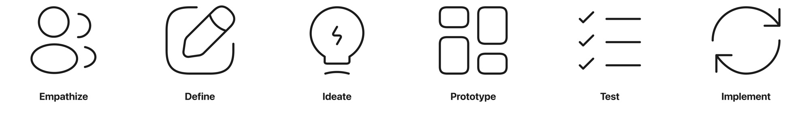
field research
One-to-one interviews with the people who would use the platform, plus two questionnaires: one shared through the company’s channels, one with an external audience to compare how training works elsewhere.
from problems to goals
The research brought out four problems, which became the four goals of the platform.
- Onboarding not standardised→Structured onboarding and training
- Continuous training not structured→Skills tracking and regular feedback
- No regular feedback→Gamification for engagement and belonging
- Generation gap and digital divide→A shared space
three users
Following the Designers Italia guidelines, the research became three personas for the three roles on the platform: Emma from HR, Pietro a team manager and Gregorio an employee. Dynamic personas then helped imagine how their behaviour could change over time.
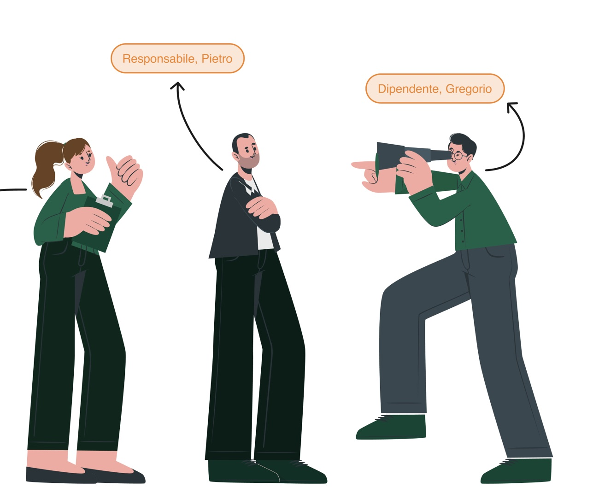
gamification
Points, levels, challenges, badges and leaderboards keep people motivated. At the heart of it is a mechanic drawn from the company’s own work: filling a pallet.
Every box stands for 12.5 hours of training, and a pallet is full at 100 hours. Badges reward smaller goals, and leaderboards are split by category, so everyone can shine where they are strongest without unhealthy competition.
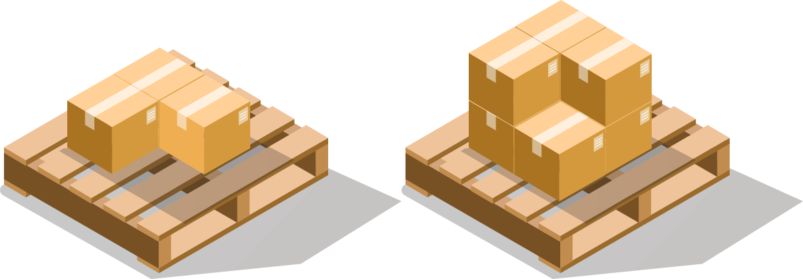
brand identity
The name uses the Æ ligature for a modern, digital feel, and the tagline learn me, learn as, learn us sums up the idea of learning together. Green and pink lead the palette, for balance, freshness and inclusion. Type is set in Adrianna for titles and SF Pro Display for text.
- green#006042
- pink#f7c0cc
- yellow#fbba00
- orange#ef7d00
- blue#0072bb
system map
The map links every actor on the platform: employees, managers, teams, HR, external training bodies and the platform itself, through courses, goals, evaluations and rewards. The information architecture was then designed for each of the three roles.
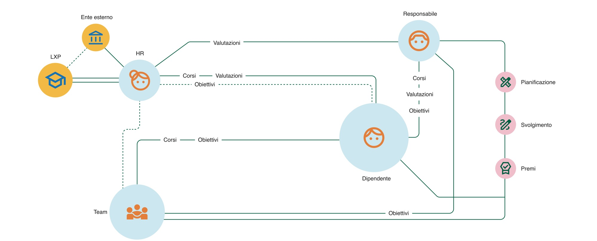
wireframes
Low-fidelity wireframes fixed the structure: a side menu, the dashboard, courses, team and profile.
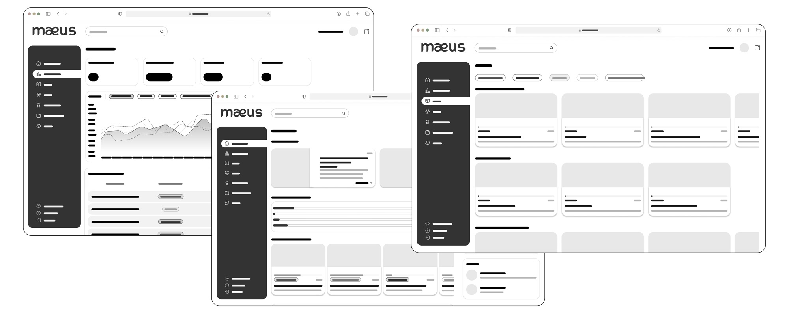
the platform
The homepage brings together industry news, a small dashboard of the year’s goals, the courses in progress and useful resources, plus a wishbox for quick requests, even anonymous ones.
The profile shows completed courses, badges, team and future goals, and is visible to everyone. The dashboard gathers hours of training, results, filled pallets and team data. Courses are grouped by category: mandatory training, soft skills, mentoring and languages.
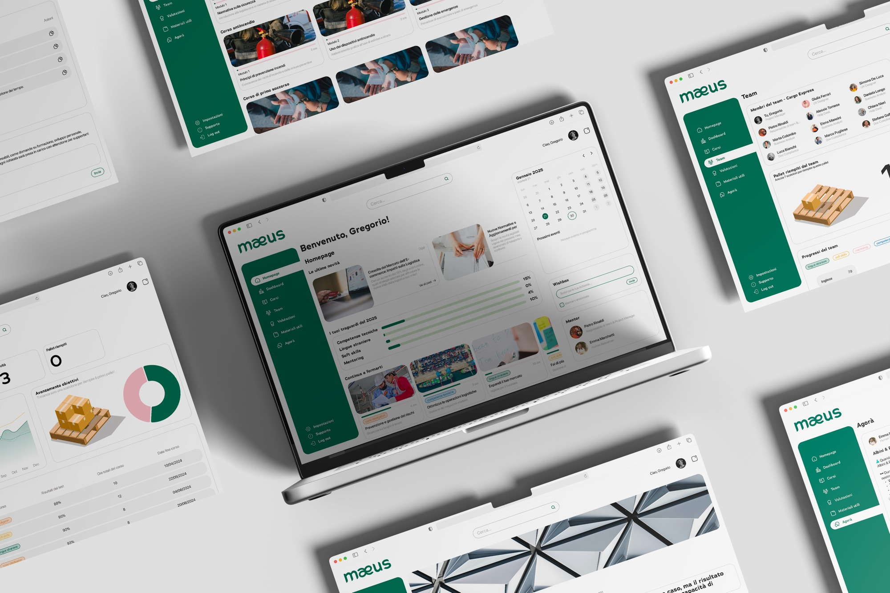
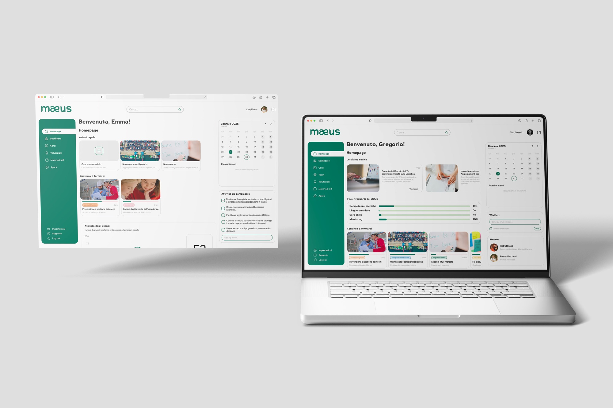
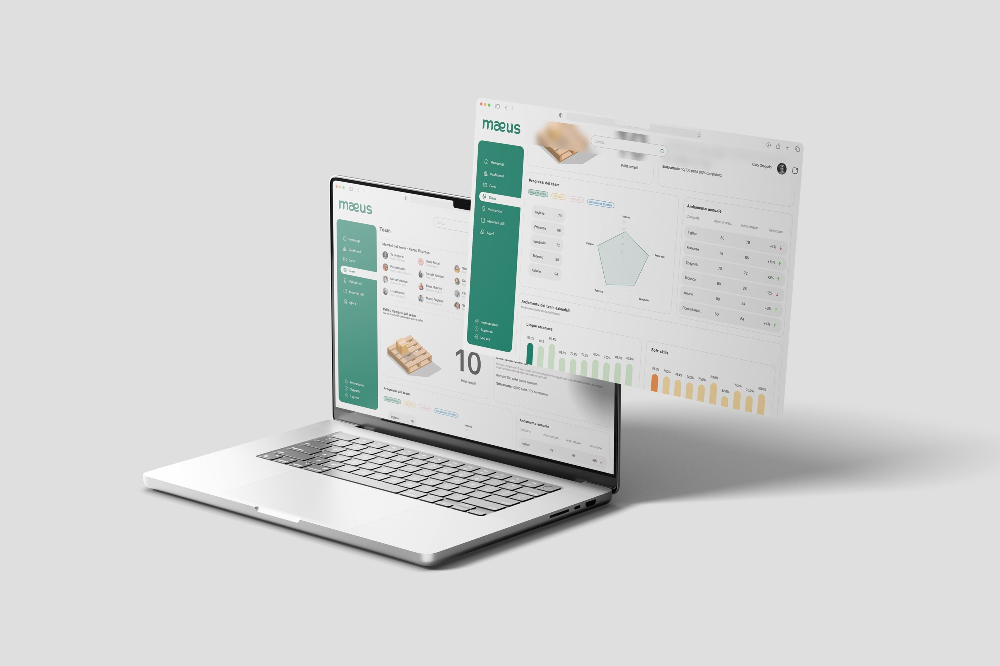
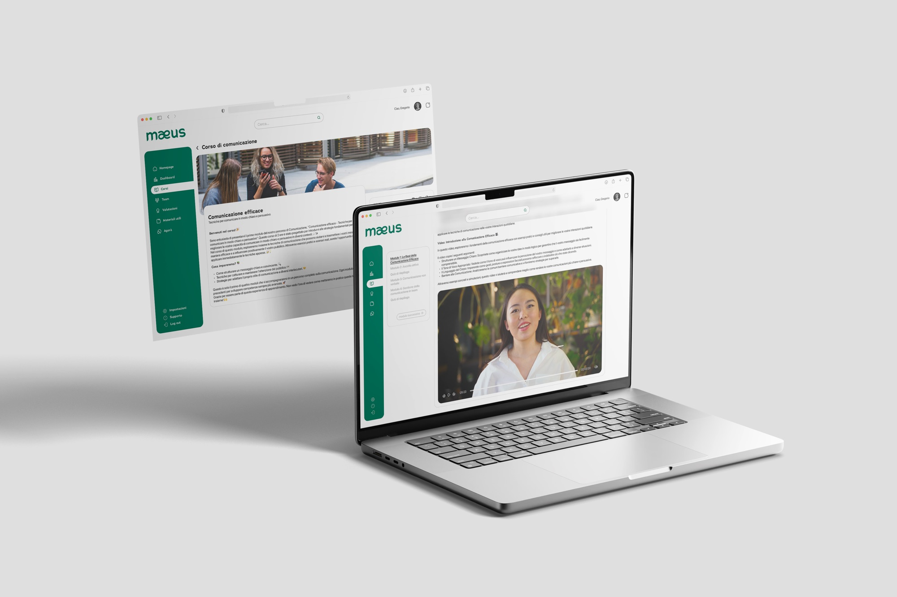
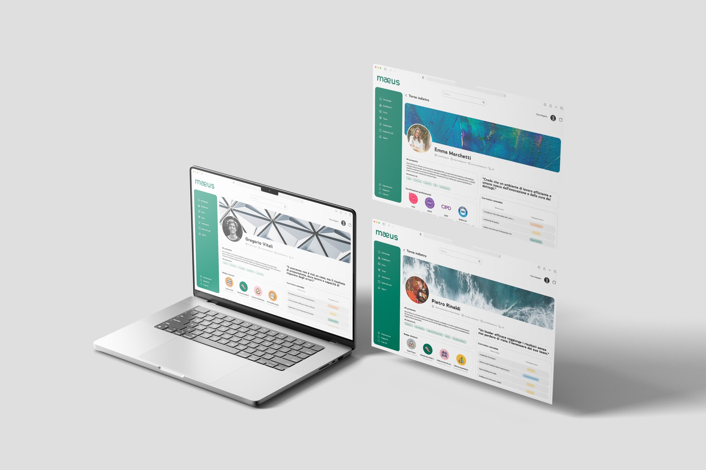
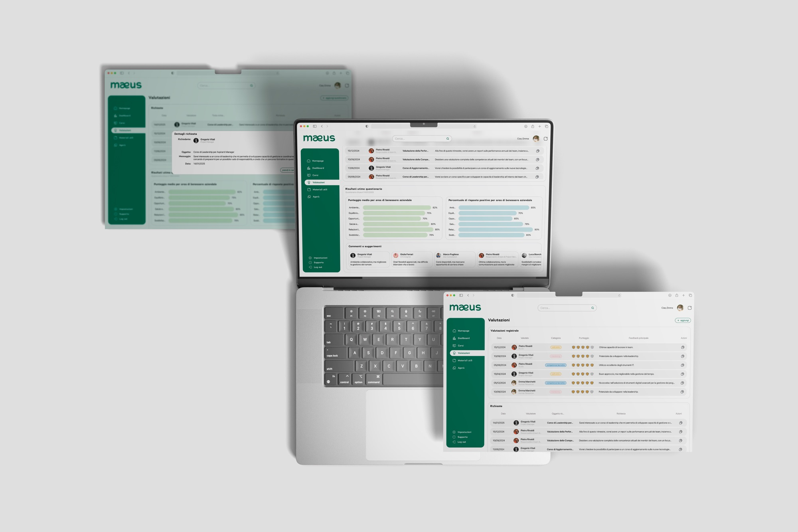
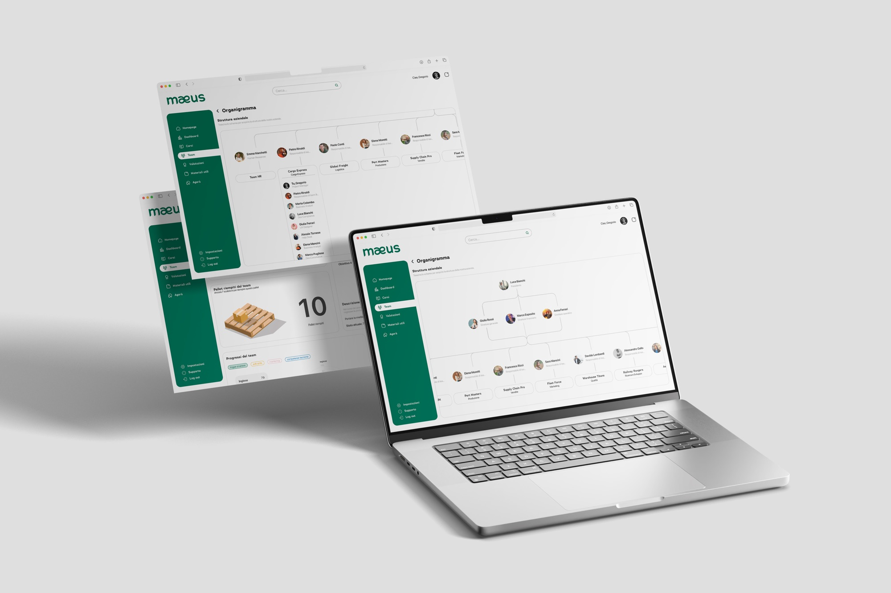
prototype
The interactive prototype, walked through by each of the three personas.
outcomes
Employees get personal learning paths and gamification that raises motivation. HR gets streamlined training processes and less admin. Managers can track progress and set team goals.
Time and budget kept the project at the prototype stage, so the platform could not yet be tested with real data. A second phase could bring a mobile version, the company’s messaging tool and a LinkedIn connection to keep CVs up to date.
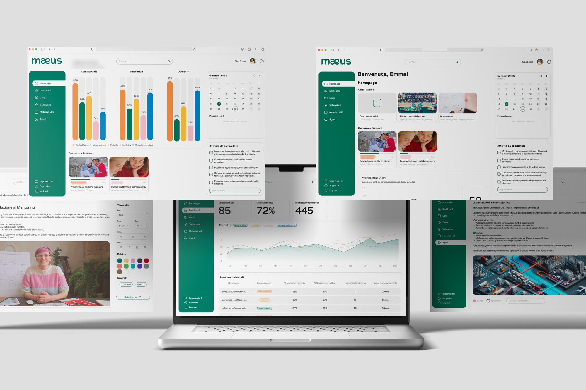